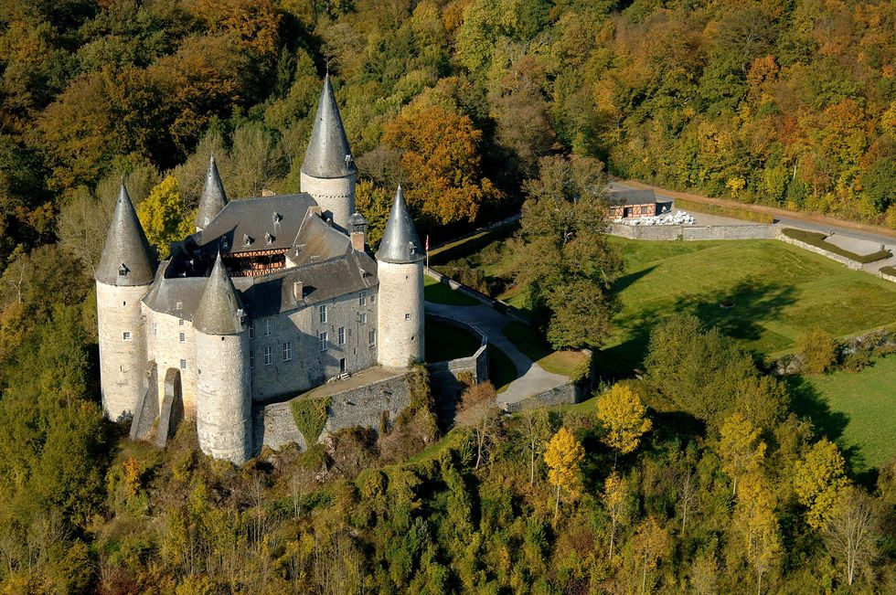

Hay muchísimos más que los que aparecen en esta selección. Pero hemos preparado una ruta imaginara a través de una una recopilación de 15 castillos que puedes encontrar en Europa. Todos ellos cuentan con una bonita estética medieval a base de gruesos muros de piedra y atractivos torreones, puesto que en la mayoría de los casos se usaban como fortaleza y residencia de reyes o familias de la nobleza. Muchos de ellos han sido declarados Patrimonio de la Humanidad por su belleza y arquitectura, ya que son una parte importante de nuestra historia y cultura, lo que hace que se invierta en su rehabilitación y que a día de hoy se conserven en perfectas condiciones. Cada uno tiene su propia historia que lo hace especial... ¡No te quedes sin conocerlos!
Se encuentra en la poco conocida región belga de Valonia que, sin embargo, esconde maravillas como sus preciosos castillos. Aunque ha sufrido diferentes reformas sus orígenes se remontan a principios del siglo XV y tiene forma de pentágono irregular, con por seis torres redondas de distinto tamaño.